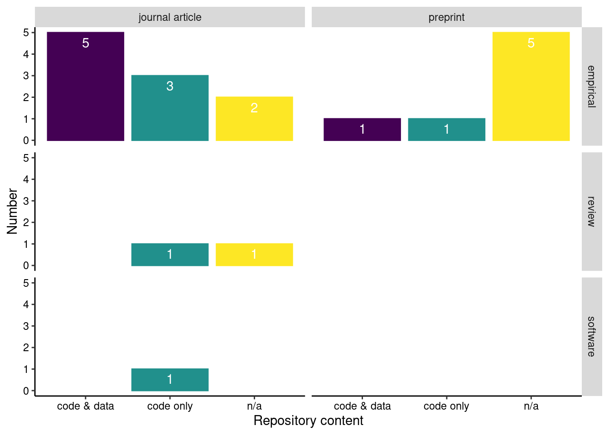
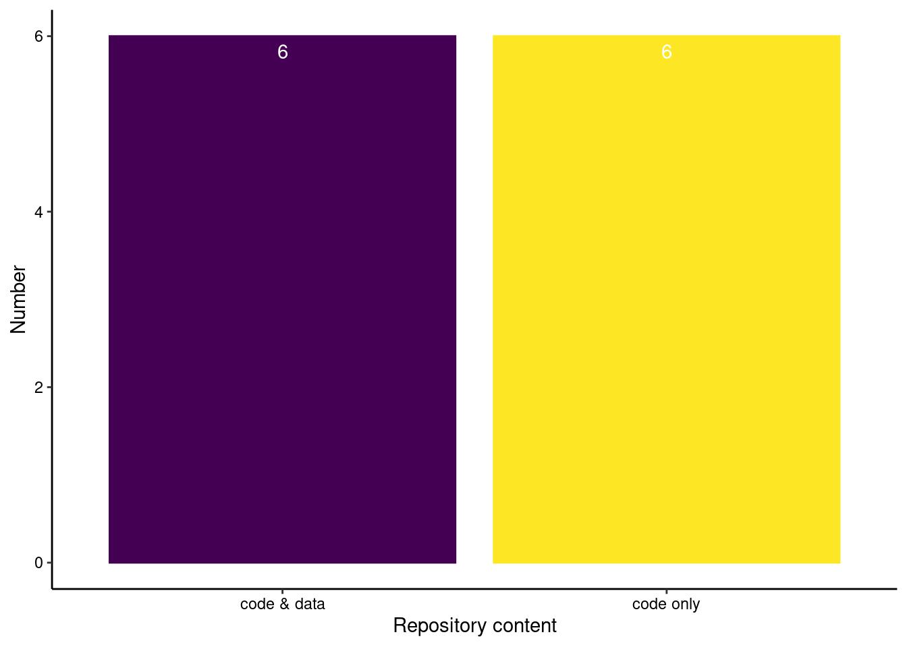

open-neurocode
This website lists code and data repositories for publications of the Max Planck Reseach Group NeuroCode at the Max Planck Institute for Human Development, Berlin (sorted by year and author). The source repository can be found on GitHub.
Overview
Repository content
What’s inside the repositories? Categories are: code only, data only and mixed (code and data mixed in one repository).
Show the code
ggplot(data, aes(x = category, fill = category, color = category)) +
geom_bar(position = "dodge", stat = "count") +
geom_text(stat = "count", aes(label = ..count..), vjust = -1) +
ylab("Number") +
xlab("Repository content") +
theme(axis.line = element_line(color = "black")) +
theme(panel.grid.major = element_blank()) +
theme(panel.grid.minor = element_blank()) +
theme(panel.background = element_blank()) +
theme(legend.position = "none") +
scale_fill_viridis(option = "viridis", discrete = TRUE) +
scale_color_viridis(option = "viridis", discrete = TRUE)
Repository platform
Which platforms are used to share code and data?
Show the code
ggplot(data, aes(x = repo_label, fill = repo_label, color = repo_label)) +
geom_bar(position = "dodge", stat = "count") +
geom_text(stat = "count", aes(label = ..count..), vjust = -1) +
ylab("Number") +
xlab("Repository platform") +
theme(axis.line = element_line(color = "black")) +
theme(panel.grid.major = element_blank()) +
theme(panel.grid.minor = element_blank()) +
theme(panel.background = element_blank()) +
theme(legend.position = "none") +
scale_fill_viridis(option = "plasma", discrete = TRUE) +
scale_color_viridis(option = "plasma", discrete = TRUE)